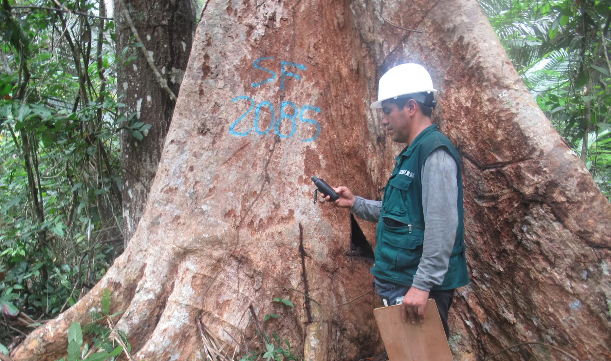
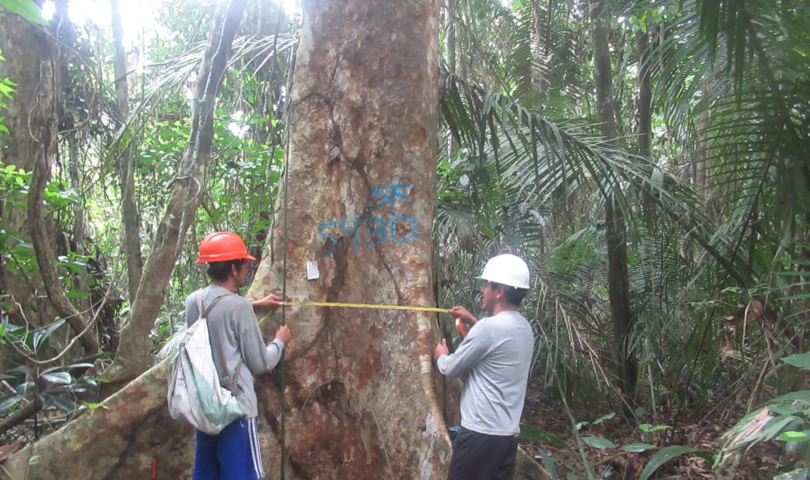
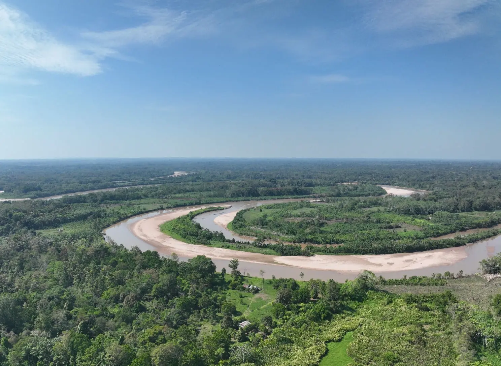

Supervisión desde el aire
Recorremos concesiones y títulos habilitantes con dron para leer el estado del bosque antes de entrar.
Supervisión forestal, inspecciones CITES, planes de manejo, estudios ambientales y obras civiles en un solo aliado técnico para instituciones públicas y empresas privadas.
Quiénes somos
Somos un aliado estratégico que fusiona la ingeniería civil con la consultoría ambiental avanzada y la gestión de recursos forestales. Generamos soluciones técnicas completas para proyectos privados y licitaciones con el Estado, asegurando una transición impecable entre la viabilidad ambiental y la ejecución de infraestructura.
Cada frente trabaja con el mismo equipo técnico, para que el estudio, el expediente y la ejecución hablen el mismo idioma.
Supervisión de planes de manejo forestal, auditorías quinquenales y monitoreo de títulos habilitantes, incluidos los contratos de cesión en uso para sistemas agroforestales (CUSAF). Inspecciones oculares de especies forestales de los apéndices CITES para la verificación técnica, la trazabilidad y el aprovechamiento sostenible.
Formulación de PGMF, PMFI, Planes Operativos (PO) y DEMA. Planes de negocio para concesionarios, comunidades nativas y campesinas, predios privados y organizaciones productivas, orientados al aprovechamiento sostenible y al acceso a financiamiento.
Inventarios forestales de alta precisión en áreas de títulos habilitantes, con la data técnica indispensable para formular correctamente los planes de manejo.
Evaluaciones técnicas y cuantificación de las existencias de carbono en bosques tropicales, abriendo oportunidades en el mercado de mitigación ambiental.
Evaluación de concesiones de conservación, ecoturismo y aprovechamiento maderable con drones (RPA) y procesamiento de imágenes satelitales, para auditar de forma rápida y exacta el estado del bosque.
Proyectos de reforestación y forestación a medida, evaluación del impacto ambiental de obras de infraestructura y soluciones para preservar el entorno.
Programas de capacitación técnica en gestión ambiental y aprovechamiento forestal para concesionarios, comunidades nativas y campesinas, titulares de predios, estudiantes y demás actores del sector.
Estudios técnicos en medio ambiente, seguridad y salud en el trabajo, calidad y responsabilidad social para minería, construcción, transporte, pesquería, agricultura e industria.
Zonificación ecológica y económica (ZEE), demarcación territorial, evaluación de riesgos, estudios topográficos y geodésicos, catastro urbano y rural, y saneamiento físico-legal de predios.
Análisis geoespacial avanzado y cartografía temática de alta precisión, adaptada a las necesidades de cada proyecto.
Análisis satelital para exploración minera, modelamiento geológico, gestión de riesgos y vigilancia de la vegetación amazónica, con detección de alertas en la cobertura boscosa.
Recolección, transporte, tratamiento y disposición final de residuos municipales, industriales, hospitalarios, agropecuarios y de construcción, peligrosos y no peligrosos, conforme a la normativa.
Diseño, supervisión y ejecución de obras civiles, mineras, electromecánicas, hidráulicas, de saneamiento, vías de comunicación y telecomunicaciones.
Consultoría y ejecución de obras públicas y privadas, cumpliendo estrictamente la normativa de contrataciones del Estado para procesos transparentes.
Edificios multifamiliares, viviendas, establecimientos de salud, colegios e infraestructura comercial e industrial.
Complejos deportivos, canchas multifuncionales y parques recreacionales que mejoran la calidad de vida de la comunidad.
Personal técnico calificado y ayudantes de campo para levantamiento de información y acompañamiento de brigadas de supervisión, inspección, auditoría y monitoreo.
Fertilizantes, semillas forestales y agrícolas certificadas, herramientas de ferretería y materiales para el trabajo de campo.
Flota de vehículos disponible para cubrir los requerimientos logísticos y de transporte de cada proyecto.


Recorremos concesiones y títulos habilitantes con dron para leer el estado del bosque antes de entrar.
Cada individuo se codifica, se mide su diámetro y se marca para que la información sea verificable.
Datos georreferenciados y formatos firmados que sostienen la verificación técnica ante la autoridad.
Verificación de especies listadas en los apéndices CITES para asegurar un aprovechamiento legal y sostenible.
Personal técnico y ayudantes de campo equipados para jornadas completas en el interior del bosque.

Visión 2031
Ser la empresa líder en soluciones que armonizan la infraestructura moderna con el resguardo de los ecosistemas.
Proveer servicios integrales de ingeniería, construcción, consultoría ambiental y gestión forestal sostenible con calidad técnica y legal excepcional, viabilizando proyectos de gran envergadura para clientes públicos y privados mientras promovemos el desarrollo social y la conservación del entorno natural.
Soluciones que equilibran el progreso de la infraestructura con el bienestar social y la preservación ambiental.
Tecnologías avanzadas y estándares metodológicos rigurosos para resultados eficientes.
Transparencia y estricta adherencia al marco legal, con seguridad jurídica en cada contrato.
Relaciones de confianza con comunidades y aliados, aportando valor a cada región.
Tomas propias de nuestras jornadas en la Amazonía. Arrastre para recorrerlas.
Respondemos con una propuesta técnica y económica. La primera conversación no tiene costo.